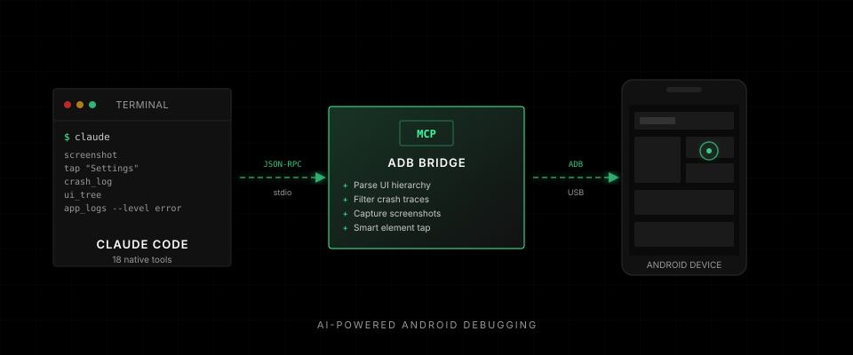
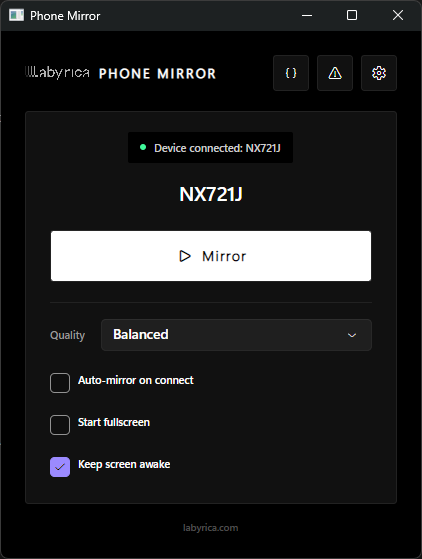
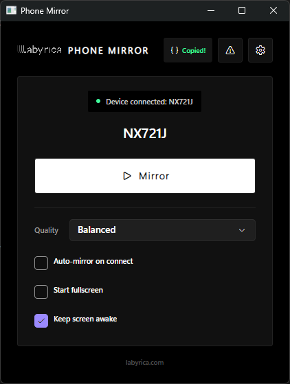
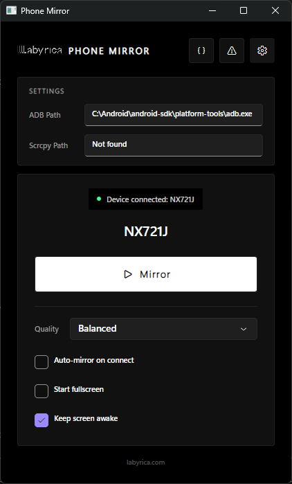
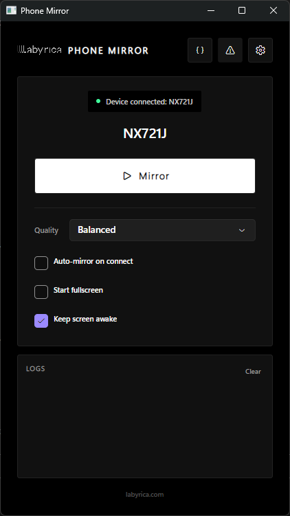

ADB Bridge is an MCP server that lets Claude Code see your Android screen, tap buttons, read crash logs, and debug your app — all as native tools.

ThemeManager.kt:47 has a null reference when applying night mode.colorScheme property isn't initialized before the toggle is called. Let me fix it.
Auto-detects your Android device. One click to start mirroring. Quality presets for any connection speed.

Click the copy button to get the Claude Code MCP configuration. Paste into settings.json and you're done.

Shows resolved ADB and scrcpy paths. Auto-discovers from PATH, ANDROID_HOME, or bundled binaries.

Real-time logcat error capture during mirroring sessions. Copy to clipboard for quick debugging.
Grab the single-file binary for your platform. No dependencies needed — the .NET runtime is bundled.
adb-bridge-win-x64.exe
adb-bridge-osx-arm64
adb-bridge-linux-x64
Add one block to your Claude Code settings. Or click the copy button in the PhoneMirror app.
{
"mcpServers": {
"adb-bridge": {
"command": "path/to/adb-bridge"
}
}
}
The tools appear automatically. Just describe what you want — Claude handles the ADB commands.
$ claude
you: Take a screenshot and
check for crashes
claude: Using screenshot...
Using crash_log...
Done.